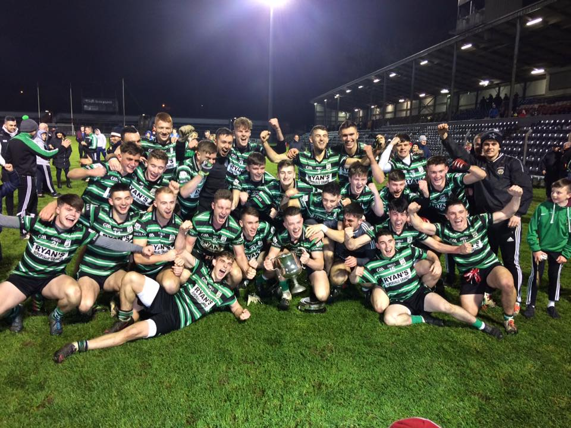
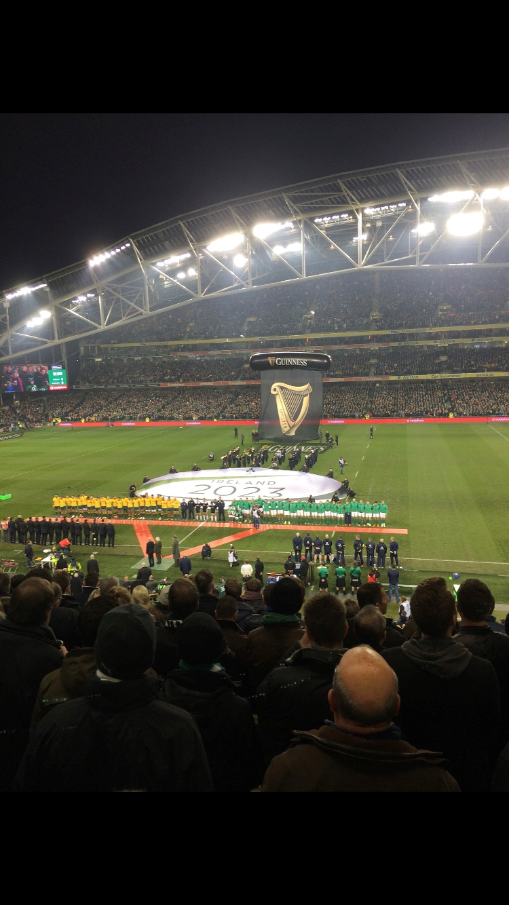
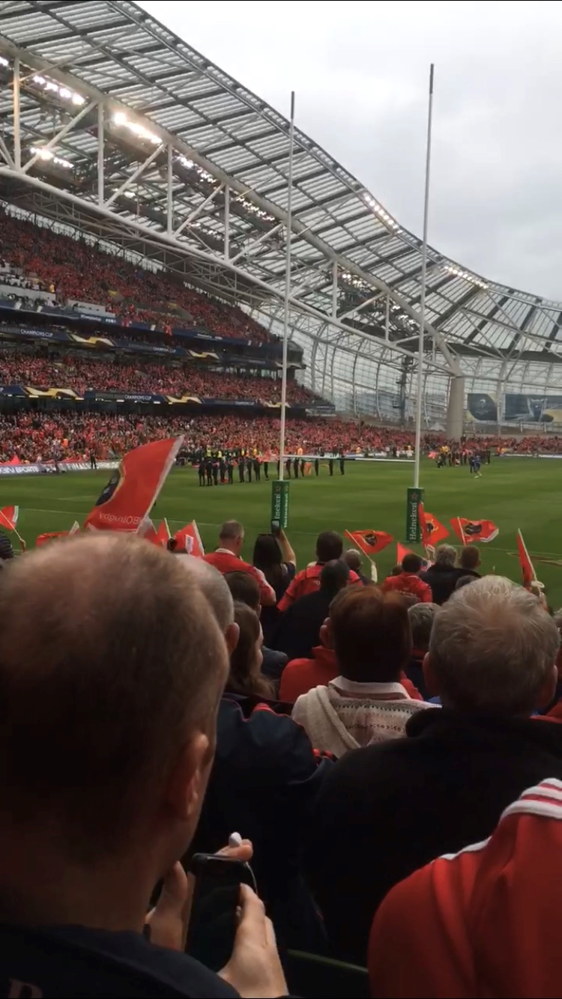

Sports hold a big part in my life. I am an avid sports fan and enjoy sports of all types. In particular I enjoy Hurling, Football and Rugby.
I am a member of Douglas Gaa and play both hurling and football here. I have been a member of the club since I was 5 and began playing in the Street Leagues. I have incredible memories of my time here which will stand with me for life. During my time playing with Douglas I have won an U13 County Championship and an U21 Football County Championship. The image below was taken shortly after the final whistle of the U21 Final. Playing for Douglas Gaa club is something I'm immensely proud of and I love the commitment involved in winning as a team.
Rugby is another passion I hold. I have been a Munster and Ireland rugby supporter since as far back as I can remember. I have framed photos in my bedroom of myself, Peter Stringer and Ronan O'Gara in City Hall after they won the 2006 Heineken Cup beating Biaritz in the final 23-19 in Cardiff, my dad was the game. I look forward every Spring to the 6 Nations Championship in the hope of a Grand Slam or Championship victory. The first photo below I took at Ireland v Australia in the Aviva Stadium in November 2016. The other photo I took at Munster v Saracens in the Aviva Stadium in April 2017.
 